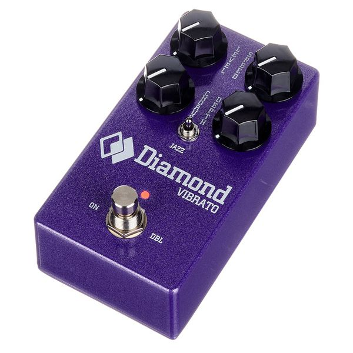
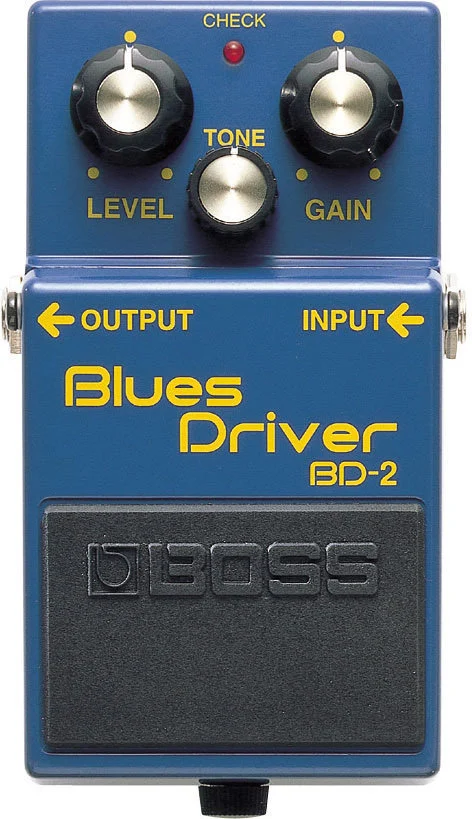
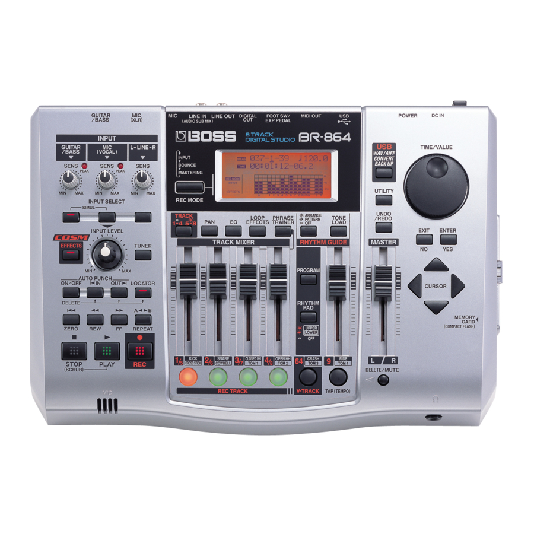
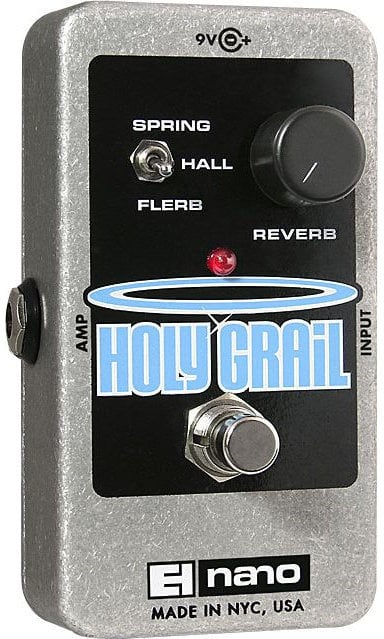

3. Apocalypse Dreams
Folytatva az álmok témakörét, a cím alapján a szám énje egy apokalipszisről álmodhat. Igazából ez az apokalipszis nem más, mint a tehetetlenség az eljövő változással szemben.
Viszonylag pozitívan kezdődik a szám, a dal énje reménykedik abban, hogy a mai nap lesz az, amikor sikeres lesz, „áttörik”, és az álmai valóra válnak. Ezt a reményt viszont rövidre zárja az a gondolat, hogy ennek az optimizmusnak az ellenére a mai nap is csak „még egy nap” lesz, és a nap végére semmi sem fog történni. Ezután kérdőjelre vonja a kudarctól való félelmét. Miért is próbálkozzon, ha a siker elérése csak egyféle megalapozott találgatás, ami úgy sem fog megtörténni.
Majd megemlíti, hogy álmaiban olyan valósnak tűnik a siker és sohasem volt még olyan közel olyasvalamihez, amit nem képes elérni. Tehát az álmai oly közel vannak, de mégsem képes elérni azokat.
Ezt követően a kórusban kitárja a dal témáját: minden megváltozik körülötte, de a változás gyakran elkerülhetetlen. A világ, az élete változik és ő kívülállóként érzi magát, aki csak nézi tud és képtelen beleszólni- az élet, a változás nem vár rád.
„Az életem lapoz előre/ Míg én csak itt üldögélek”
A dal „hídjában” egyfajta krízis éri a „lírai ént”, és ebben pedig az abszurdizmus jelei vélhetők fel. Keresi a jelentést az életében, de képtelen elérni. A dal énje megkérdőjelezi, hogy közeledik-e céljához, vagy hogy egyáltalán valaha eléri-e azt. A gondolatot viszont azzal a beismeréssel zárja, hogy egyáltalán számít-e bármit is ez az egész, kell-e neki ez?
„Kilöki az ablakon”, megy tovább- lemond a célja eléréséről. Bár nem is ismerte igazán az álmát, de ennek ellenére hiányolni fogja.
A dal végén visszautal egy korábbi számára, az „Expectation” -re, ahol arról beszélt, hogy őt nem érdekli semmi, de amikor átment az ő általa kedvelt lány, azért mégis megfésülte a haját (ekkor Kevinnek még hosszabb haja volt).
Hasonlóképpen, itt azt mondja, hogy semmi sem számít, még az sem, hogy meddig csinálja a haját, mert a nap végén mindenki számára ugyanúgy fog kinézni. Hiába, hogy ő változtatni akar, de értelmetlen, mert úgy sem történik belőle semmi. A dal végét azzal zárja, hogy figyelmeztetnie kéne anyukáját arról, hogy változnak a dolgok, de ő valószínűleg csak örülne neki. Mások másképpen látják az életünk, és nem mindig érzik át azt, ami velünk történik.
Itt be is fejeződik a gondolatmenet, ezután egy gyönyörű hangszeres kivezető következik, ami mélyen fülcsiklandozó. Ez egyfajta elengedésként vehető, szépen kiegészíti a dal lényegét.
A dal valószínűleg arról íródott, hogy Tame Impala ekkor kezdett igazán híres lenni és itt volt előtte az a gigászi feladat, hogy felülmúlja első albumát. Kevin nem gondolta volna, hogy valóban híressé válik egy nap, és ez a hirtelen változás megterhelte, még ha ez is volt az álma.
A számot ismét a dob vezeti, ahol a lábdob és pergő egyszerre történő megütése és a szinkópált dobolás váltják egymást, ezzel előrehajtva a dalt.
Az elején a gitár erős kompresszort, Diamond vibrátót, Boss Blues Drivert használ, a szinti-gitáron pedig egy Boss BR-864-et használ EHX Holy Grail „visszhang” pedállal.
A basszus itt is Kevin kedvelt Höfnerjével volt felvéve, mint a legtöbb számában, és itt is fülbemászó- mint a legtöbb számában. Elég komplex és az egyik legfülbemászóbb, szinte az emberben ragad. Lead gitár hiányában ez viszi a dallamot.
Az akkordokat többnyire zongora és szintetizátor viszi, ezen a számon mindkettőt Jay Watson, azaz GUM játssza.